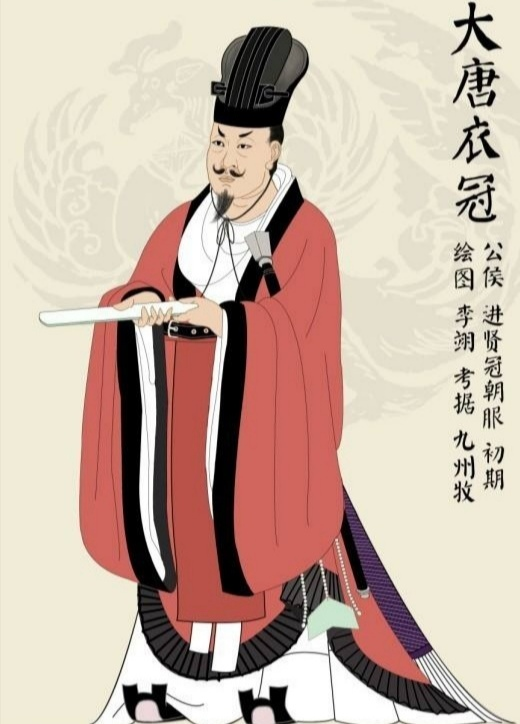

武官服饰

唐代武官穿的大袍子略短，至膝下。唐代的军服是“将帅用袍，军士用袄”。在将帅的袍上，要绣上狮虎的图案，以显示其勇猛威武。唐代的铠甲有13种之多，甲片的形式有细鳞、山文、锁子等，材质则包括金属、皮革和绢等。可以说从样式到工艺，唐代的军服都比前代有了很大的进步。
唐代武官的服制花色，规定武三品以上、左右武威卫饰对虎，左右豹韬,卫饰豹，左右鹰扬卫饰鹰，左右玉钤卫饰对鹘，左右金吾卫饰对豹。又诸王饰盘龙及鹿，宰相饰凤池，尚书饰对雁。后又规定千牛卫饰瑞牛，左右卫饰瑞马，骁卫饰虎，武卫饰鹰，威卫饰豹，领军卫饰白泽，金吾卫饰辟邪，监门卫饰狮子。唐太和六年又许三品以上服鹘衔瑞草、雁衔绶带及对孔雀绫袄。这类纹饰均以刺绣，按唐代服装款式，一般应绣于胸背或肩袖部位。
唐代在战场上驰骋的都是人披马甲不具装的轻骑，步兵甲占步兵人数60%，《唐六典》记唐甲有13种，即明光甲、光西甲、细鳞甲、山文甲、乌锤甲、白布甲、皂绢甲、布背甲、步兵甲、皮甲、木甲、锁子甲、马甲。
锁子甲即曹植表中所说的环锁铠，《晋书·吕光传》记载前秦吕光在进攻龟兹城时见西域诸军甲如连锁，射不可入，隋唐时西域康国向中原朝廷进贡过此种铠甲。唐代将此种铠甲分成大中小三种型号，按体型高矮分给战士使用。《唐六典》武库令中记载着弓、刀、甲的种类，盾则改名彭排，计6种，即藤排、团排、漆排、木排、联木排、皮排。据注明，藤、团、漆、木都是古制。
唐代胄甲
隋唐五代服饰初唐的铠甲和戎服的基本保持着南北朝以来至隋代的样式和形制。贞观以后，进行了一系列服饰制度的改革，渐渐形成了具有唐代风格的军戎服饰。高宗、则天两朝，国力鼎盛，天下承平，上层集团奢侈之风日趋严重，戎服和铠甲的大部分脱离了使用的功能，演变成为美观豪华，以装饰为主的礼仪服饰。“安史之乱”后，重有恢复到金戈铁马时代的那种利于作战的实用状态，特别是铠甲，晚唐时已形成基本固定的形制，唐代的铠甲，据《唐六典》记载，有明光、光要、细鳞、山文、鸟锤、白布、皂娟、布背、步兵、皮甲、木甲、锁子、马甲等十三种。其中明光、光要、锁子、山文、鸟锤、细鳞甲是铁甲，后三种是以铠甲甲片的式样来命名的。皮甲、木甲、白布、皂娟、布背，则是以制造材料命名。在铠甲中，仍以明光甲使用最普遍。